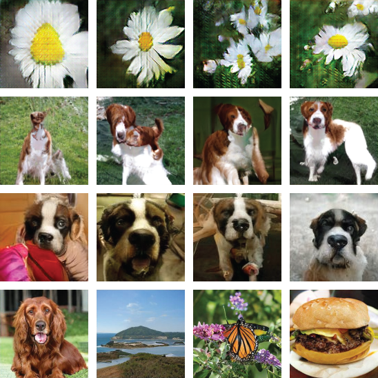

从某些指标来看，生成对抗网络（GANs）的研究在过去两年中取得了实质性进展。 图像合成模型的实际改进几乎快到让人跟不上[[ACGAN,SAGAN,SPECTRALNORM,BIGGAN,STYLEGAN]]：

然而，从其他指标来看，进展却没有那么多。例如，对于如何评估GANs仍存在广泛分歧。 鉴于当前的图像合成基准似乎在某种程度上已经饱和，我们认为现在是反思该子领域研究目标的好时机。
开放问题清单曾经帮助过其他领域[[BAEZ,NOTFAMOUS,HILBERT,SMALE]]。 本文提出了一些我们希望其他研究者能去研究的开放研究问题。 [1] 我们假设读者具备一定背景知识（或愿意查阅资料）， 因为我们引用的结果太多，无法详细解释所有这些结果。
GANs与其他生成模型之间的权衡是什么？
除了GANs，目前流行的另外两类生成模型是Flow Models和Autoregressive Models [2]。 粗略来说，Flow Models[[NICE,REALNVP,GLOW,NFTUTORIAL]]对来自先验的样本应用一组可逆变换， 从而可以计算观测值的精确对数似然。 另一方面，Autoregressive Models[[PIXELRNN,PIXELCNN,PIXELCNNPP,WAVENET]]将观测值的分布分解为条件分布， 并一次处理观测值的一个分量（对于图像，它们可能一次处理一个像素）。 最近的研究[[GLOW,PROGRESSIVEGAN]]表明，这些模型具有不同的性能特征和权衡。 我们认为，准确刻画这些权衡，并判断它们是否是模型族固有的，是一个有趣的开放问题。
为具体起见，我们暂时聚焦于GANs和Flow Models在计算成本上的差异。 乍一看，Flow Models似乎可能让GANs变得多余。 Flow Models允许精确的对数似然计算和精确推断， 因此如果训练Flow Models和GANs的计算成本相同，GANs可能就没用了。 人们在训练GANs上投入了大量精力， 因此我们似乎应该关心Flow Models是否会让GANs过时 [3]。
然而，训练GANs和Flow Models的计算成本之间似乎存在巨大差距。 为了估计这一差距的大小，我们可以考虑两个在人脸数据集上训练的模型。 GLOW模型[[GLOW]]使用40个GPU训练两周、约2亿参数，来生成256x256的名人脸部图像。 相比之下，progressive GANs[[PROGRESSIVEGAN]]在类似的人脸数据集上使用8个GPU训练4天、约4600万参数， 来生成1024x1024的图像。 粗略来说，Flow Model花费了17倍的GPU天数和4倍的参数， 却只生成像素数少16倍的图像。 这个比较并不完美， [4] 但它能让你对情况有所了解。
为什么Flow Models的效率较低？ 我们看到两个可能的原因： 首先，最大似然训练可能在计算上比对抗训练更困难。 特别是，如果你的训练集中任何元素被生成模型赋予零概率， 你将受到无限严厉的惩罚！ 而GAN的生成器只有在间接为训练集元素赋予零概率时才受到惩罚， 而且这种惩罚不那么严厉。 其次，归一化流可能是表示某些函数的一种低效方式。 [[NORMALIZINGFLOWS]]的6.1节做了一些关于表达性的小实验，但目前我们还没有看到对这个问题的深入分析。
我们讨论了GANs与Flow Models之间的权衡，但Autoregressive Models呢？ 事实证明，Autoregressive Models可以表示为Flow Models （因为它们都是可逆的[[NFTUTORIAL]]），但不可并行化。 [5] 此外，Autoregressive Models在时间和参数效率上都优于Flow Models。 因此，GANs是并行且高效的，但不可逆； Flow Models是可逆且并行的，但不高效； 而Autoregressive Models是可逆且高效的，但不可并行。
| Parallel | Efficient | Reversible | |
|---|---|---|---|
| GANs | Yes | Yes | No |
| Flow Models | Yes | No | Yes |
| Autoregressive Models | No | Yes | Yes |
这引出了我们的第一个开放问题：
问题 1
GANs与其他生成模型之间的根本权衡是什么？
特别是，我们能否做出某种类似CAP定理[[CAPTHEOREM]]的陈述，关于可逆性、并行性和参数/时间效率？
解决这个问题的一种方法是研究更多属于多个模型族混合的模型。 这在混合GAN/Flow模型中已经被考虑过[[FLOWGAN,FLOWGAN2]]，但我们认为这种方法仍未得到充分探索。
我们也不确定最大似然训练是否一定比GAN训练更难。 确实，在GAN训练损失下，并没有明确禁止对训练数据点赋予零质量， 但如果生成器这样做，一个足够强大的判别器将能够以优于随机猜测的表现进行区分。 不过，实践中GANs似乎确实在学习低支撑的分布[[CONDITIONING]]。
最终，我们怀疑Flow Models在每个参数上的表达能力从根本上低于任意解码器函数， 并且我们怀疑在某些假设下这是可以证明的。
GANs能够建模哪些类型的分布？
大多数GAN研究都聚焦于图像合成。 特别是，人们在少数几个（深度学习社区中）标准的图像数据集上训练GANs： MNIST[[MNIST]]、 CIFAR-10[[CIFAR]]、 STL-10[[STL]]、 CelebA[[CELEBA]]， 和ImageNet[[IMAGENET]]。 关于这些数据集中哪些“最容易”建模，存在一些经验说法。 特别是，MNIST和CelebA被认为比ImageNet、CIFAR-10或STL-10更容易，因为它们“极其规则”[[COLINTWEET]]。 其他人指出，“类别数量多是导致ImageNet合成对GANs困难的主要原因”[[ACGAN]]。 这些观察得到了经验事实的支持：在CelebA上的最先进图像合成模型[[STYLEGAN]]生成的图像 看起来明显比ImageNet上的最先进图像合成模型[[BIGGAN]]更有说服力。
然而，我们不得不通过在越来越大、越来越复杂的数据集上训练GANs这一费力且充满噪声的过程 来得出这些结论。 特别是，我们主要研究了GANs在那些恰好为目标识别而准备的数据集上的表现。
与任何科学一样，我们希望有一个简单的理论来解释我们的实验观察。 理想情况下，我们可以查看一个数据集，执行一些计算而无需实际训练生成模型， 然后说出类似“这个数据集对GAN来说容易建模，但对VAE来说不容易”这样的话。 这个话题已经取得了一些进展[[GANSEQUAL,DISCONNECTED]]， 但我们觉得还可以做得更多。 我们现在可以陈述这个问题：
问题 2
给定一个分布，我们能说出GAN建模该分布有多困难吗？
我们也可以问以下相关问题： 我们所说的“建模分布”是什么意思？我们是否满足于低支撑表示，还是想要一个真正的密度模型？ 是否存在GAN永远无法学会建模的分布？ 是否存在原则上GAN可以学习，但对于某种合理资源消耗模型来说无法高效学习的分布？ 这些问题的答案对于GANs和其他生成模型来说是否真的不同？
我们提出两种回答这些问题的策略：
我们如何将GANs扩展到图像合成之外？
除了图像到图像转换[[CYCLEGAN]] 和域适应[[DOMAINADAPTATION]]等应用外， GANs的大多数成功都集中在图像合成上。 将GANs用于图像之外的尝试主要集中在三个领域：
尽管有这些尝试，图像显然仍是GANs最容易处理的领域。 这引出了我们的问题陈述：
问题 3
如何让GANs在非图像数据上表现良好？
将GANs扩展到其他领域是否需要新的训练技术， 还是只需要为每个领域提供更好的隐式先验？
我们期望GANs最终能在其他连续数据上取得图像合成水平的成功， 但这将需要更好的隐式先验。 找到这些先验需要深入思考在给定领域中什么是有意义的且计算上可行的。
对于结构化数据或非连续数据，我们就不那么确定了。 一种方法可能是让生成器和判别器都成为用强化学习训练的智能体。 让这种方法奏效可能需要大规模计算资源[[DOTA]]。 最后，这个问题可能只是需要基础研究进展。
关于GAN训练的全局收敛性，我们能说些什么？
训练GANs与训练其他神经网络不同，因为我们同时优化生成器和判别器以实现对立的目标。 在某些假设下 [6]， 这种同时优化是局部渐近稳定的[[LOCALLYSTABLE,WHICHMETHODSCONVERGE]]。
不幸的是，很难对完全一般的情况证明有趣的事情。 这是因为判别器/生成器的损失是其参数的非凸函数。 但所有神经网络都有这个问题！ 我们希望有某种方法来只关注同时优化所带来的问题。 这带来了我们的问题：
问题 4
什么时候我们能证明GANs是全局收敛的？
哪些神经网络收敛结果可以应用于GANs？
这个问题已经取得了实质性进展。 总的来说，存在3种现有技术，都产生了有希望的结果，但都没有被研究到彻底：
我们应该如何评估GANs以及什么时候应该使用它们？
谈到评估GANs时，有很多建议，但很少有共识。 建议包括：
这些只是提出的GAN评估方案中的一小部分。 尽管Inception Score和FID相对流行，但GAN评估显然不是一个已解决的问题。 最终，我们认为关于如何评估GANs的困惑源于关于何时使用GANs的困惑。 因此，我们将这两个问题捆绑在一起：
问题 5
什么时候我们应该使用GANs而不是其他生成模型？
在这些情境下我们应该如何评估性能？
我们应该用GANs来做什么？ 如果你想要一个真正的密度模型，GANs可能不是最佳选择。 现在有良好的实验证据表明GANs学习的是目标数据集的“低支撑”表示 [[FLOWGAN,FLOWGAN2,CONDITIONING]]，这意味着测试集中可能有很大一部分 GAN（隐式地）赋予了零似然。
与其过于担心这一点，[10] 我们认为将GAN研究聚焦于那些这种情况没问题甚至有帮助的任务上更有意义。 GANs很可能适合于具有感知特性的任务。 图形应用如图像合成、图像转换、图像补全和属性操纵 都属于这一范畴。
我们应该如何在这些感知任务上评估GANs？ 理想情况下，我们只需使用人类裁判，但这成本很高。 一个廉价的代理方法是看分类器是否能区分真实和虚假样本。 这被称为分类器双样本测试（C2STs） [[CLASSIFIERTWOSAMPLE,PARAMETRIC,FIDBAD]]。 C2STs的主要问题是，如果生成器有一个即使很小的、跨样本系统性的缺陷 （例如，[[CHECKERBOARD]]），这将主导评估结果。
理想情况下，我们会有一个不被单一因素主导的整体评估。 一种方法可能是构建一个对主导缺陷视而不见的批评者。 但一旦我们这样做，其他缺陷可能会主导，需要一个新的批评者，以此类推。 如果我们迭代地这样做，我们可以得到一种“批评者的Gram-Schmidt过程”， 创建一个最重要的缺陷的有序列表以及忽略它们的批评者。 或许这可以通过对批评者激活进行PCA[[SVCCA]]并逐步丢弃 越来越多的高方差成分来实现。
最后，尽管成本高昂，我们仍可以在人身上进行评估。 这将允许我们衡量我们真正关心的事情。 这种方法可以通过预测人类答案，并在预测不确定时才与真实人类交互来降低成本[[PREFERENCES]]。
GAN训练如何随批大小扩展？
大批次有助于扩展图像分类[[IMAGENET1HOUR,BATCH32,TRAINLONGERGENERALIZEBETTER,DONTDECAY,NOISESCALE]]——它们也能帮助我们扩展GANs吗？ 大批次对于有效使用高度并行的硬件加速器可能特别重要[[NOMOREMOORE,TPU]]。
乍一看，答案似乎应该是肯定的——毕竟，大多数GAN中的判别器只是一个图像分类器。 如果训练受梯度噪声限制，更大的批次可以加速训练。 然而，GANs有一个分类器没有的单独瓶颈：训练过程可能会发散。 因此，我们可以陈述我们的问题：
问题 6
GAN训练如何随批大小扩展？
梯度噪声在GAN训练中扮演多大角色？
GAN训练能否被修改以更好地随批大小扩展？
有证据表明增加小批次大小可以改善量化结果并减少训练时间[[BIGGAN]]。 如果这种现象是稳健的，它将表明梯度噪声是一个主导因素。 然而，这还没有被系统性地研究，因此我们认为这个问题仍然是开放的。
替代训练过程能否更好地利用大批次？ 最优传输GANs[[OTGAN]]理论上比普通GANs具有更好的收敛性质， 但需要大的批大小，因为它们试图对齐样本批次和训练数据。 因此，它们似乎是扩展到非常大批大小的有希望的候选者。
最后，异步SGD[[LARGEDEAN,ELASTIC,SUYOG,FASGD]]可能是利用新硬件的一个好替代方案。 在这种设置中，限制因素往往是梯度更新是在参数的“过时”副本上计算的。 但GANs似乎实际上从在过去参数快照上训练中受益[[CHEKHOV,AVERAGING]]，因此我们可以问 异步SGD是否与GAN训练以一种特殊的方式相互作用。
GANs与对抗样本之间是什么关系？
众所周知[[INTRIGUING]]，图像分类器会受到对抗样本的影响： 人类难以察觉的扰动，添加到图像上会导致分类器给出错误输出。 现在也已知道，有些分类问题通常可以被高效学习， 但要稳健地学习却是指数级困难的[[CONSTRAINTS,SQM]]。
由于GAN判别器是一个图像分类器，人们可能会担心它会受到对抗样本的影响。 尽管关于GANs和对抗样本都有大量文献， 但似乎并没有太多关于它们如何相关的工作。 [11] 因此，我们可以提出这个问题：
问题 7
判别器的对抗稳健性如何影响GAN训练？
我们如何开始思考这个问题？ 考虑一个固定的判别器D。 如果存在一个生成器样本G(z)被正确分类为假， 以及一个小的扰动p，使得G(z)+p被分类为真， 那么D就会存在对抗样本。 对于GAN来说，担心的是生成器的梯度更新会产生 一个新的生成器G′，其中G′(z)=G(z)+p。
这种担心现实吗？ [[AEFGM]]表明对生成模型的故意攻击可以奏效， 但我们更担心的是你可以称之为“意外攻击”的东西。 有理由相信这些意外攻击不太可能发生。 首先，生成器只允许在判别器再次更新之前进行一次梯度更新。 相比之下，当前的对抗攻击通常运行数十次迭代[[MADRY]]。 其次，生成器是根据来自先验的一批样本进行优化的，而且这批样本在每个梯度步骤都不同。 最后，优化发生在生成器参数空间而不是像素空间。 然而，这些论点中没有一个能决定性地排除生成器创建对抗样本的可能性。 我们认为这是一个值得进一步探索的有成果的话题。